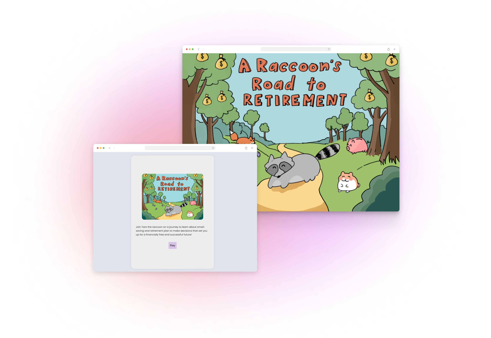
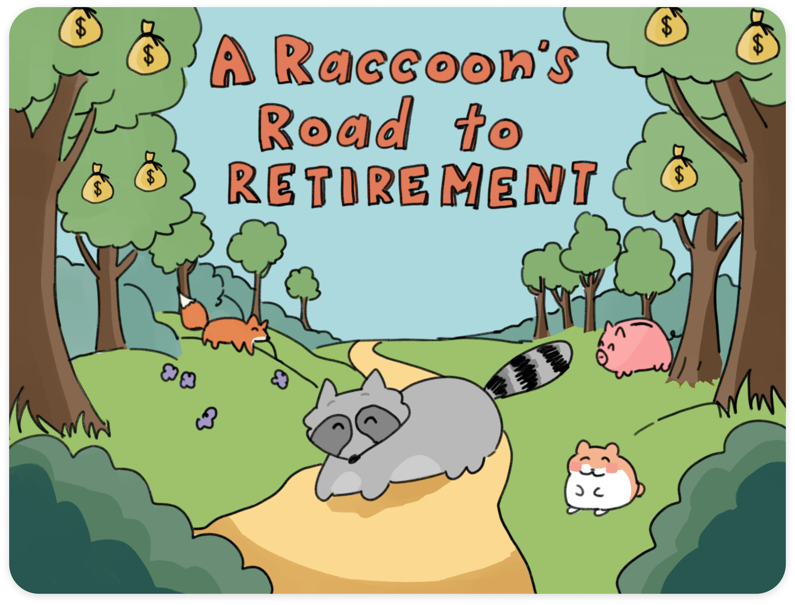
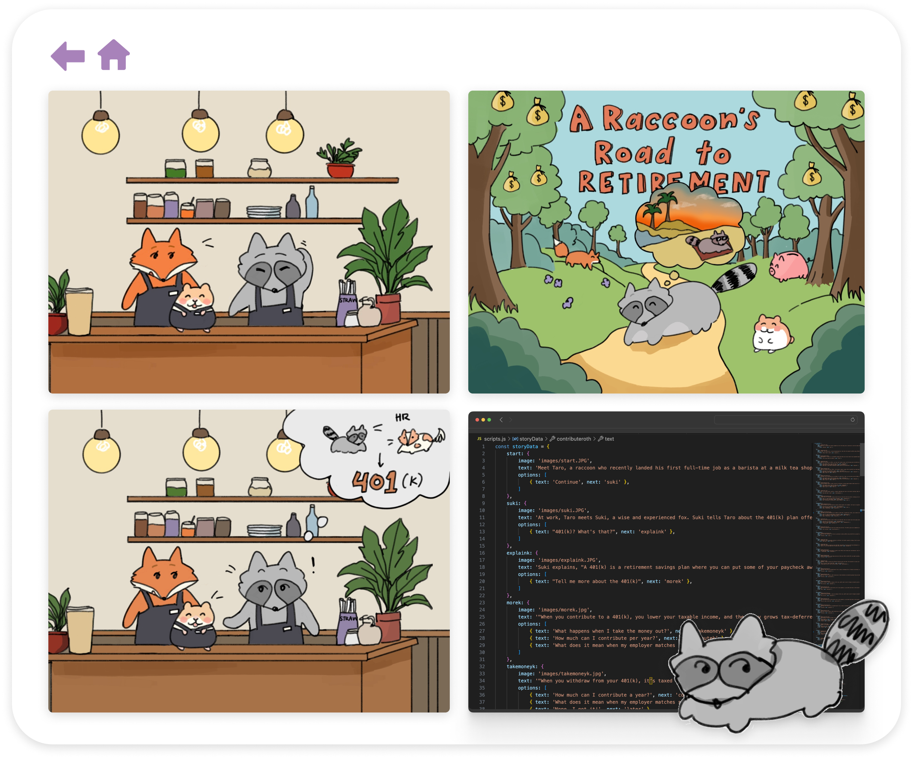

A Raccoon's Road to Retirement
Disclaimer: The content provided in this interactive story is intended for educational purposes only and should not be considered financial advice. Always consult with a licensed financial professional before making any investment or retirement decisions.
💬📖 Interactive Web Story
💡 About
A Raccoon's Road to Retirement is an interactive narrative featuring a cartoon raccoon that educates young adults on financial literacy through a gamified experience, combining storytelling with detailed financial concepts to enhance understanding of retirement accounts like Roth IRAs and 401(k)s, investment options, and contribution strategies.
🦝 Inspiration
Inspired by my love for raccoons, my interest in investment, and my first part-time job at a milk tea shop, I created A Raccoon's Road to Retirement. This project merges my passions for coding, storytelling, and illustration, enhancing my understanding of financial concepts while also aiming to educate others in an engaging and enjoyable way!
Explore the Project Below!
📌 My Process
☁️ Storytelling
I began by brainstorming the story's narrative and characters, focusing on how to present financial concepts in a simple and relatable way. The protagonist, a raccoon who has just landed his first job, was designed to reflect the experiences of young adults entering the workforce and learning about financial responsibility.
🖼️ Illustration
To bring the story to life, I drew over 30 digital illustrations using Procreate, depicting various scenes and characters that enhance the narrative. These visuals were carefully crafted to be both educational and entertaining, ensuring that users remain engaged as they navigate through the story.
👩🏻💻 Development
I coded the interactive story using HTML, CSS, and JavaScript, integrating the illustrations and narrative into a seamless user experience. Each decision point is an opportunity to learn about different aspects of investing and retirement planning.
🌱 User Experience Design
While designing the project, I focused on creating a fun, enjoyable, and insightful experience for the user. The interface was designed to be user-friendly, with clear navigation such as a back and home button and engaging interactions that make complex financial topics accessible to a broad audience.
Back to Home